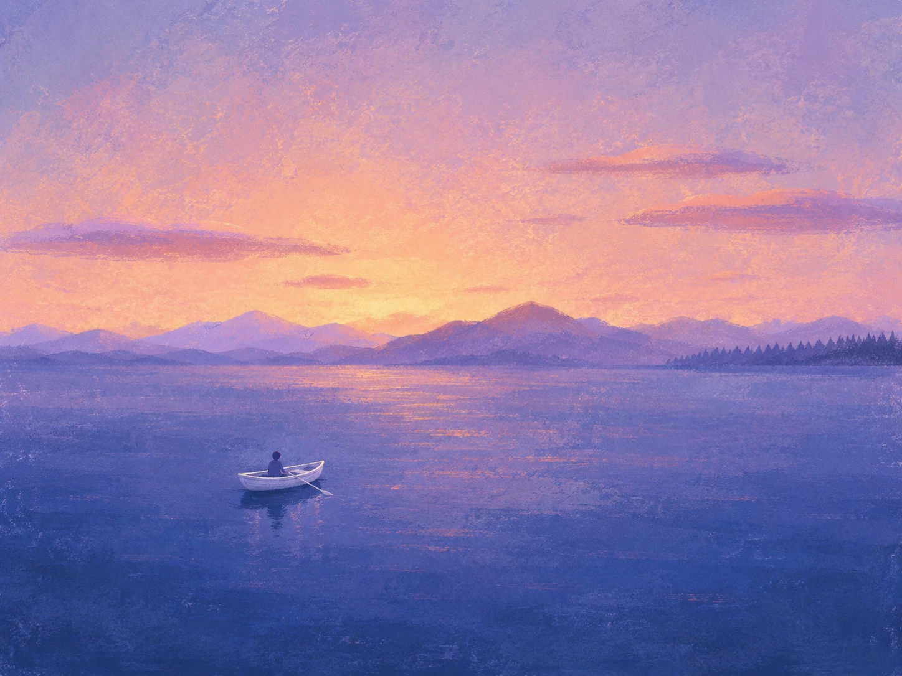

I deposited $10 so I could withdraw $20
11 August 2026

About 20 years ago, I was building a brick-and-mortar education business. I was young, still in school, and barely meeting monthly payroll. Some months I used my own savings to cover costs and pay things on time.
One day I fell asleep on the bus on the way to work. I woke up at the bus terminal and my wallet was gone.
Very unfortunately, that was also the day I had drawn cash, more than usual, because I needed to pay some bills. A few hundred dollars, which was more than a month of my expenses back then.
I was crushed. But there was no one to blame but myself.
Because I lost so much, I had to stretch every single dollar. It came to a point where my bank account had $10 and my wallet had $10. The ATM required a minimum $20 withdrawal. So I deposited $10 into the ATM just so I could take out $20.
That was a strange moment. Part of me thought, wow, that's kind of sad. Another part thought, wow, you didn't give up.
It gave me a very clear feeling that this cannot happen again. (It hasn't. So far.)
My slippers stolen 🩴
Very soon after, with money still tight, another misfortune happened. This time, I had my slippers stolen outside the tuition centre. We kept the place clean by having everyone leave their slippers at the door. Mine were a somewhat popular brand back then1, and someone took them.
That was where I lost it. Not because of the slippers. But because of everything. A series of small misfortunes stacking up on top of having no money. I ranted, loudly, in front of people.
A few of my ex-colleagues were there. I was ashamed. It wasn't a good look.
One of them, a kind gentleman I worked with, pulled some money together with the others and went out to buy me a very similar pair.
After that, I had two feelings sitting right next to each other:
Gratitude. And shame.
Gratitude because someone did something kind without being asked. Shame because I shouldn't have acted the way I did. Both feelings stayed with me for a long time.
He and I went on to work together at Tech in Asia. He contributed a lot.
It's never enough 💰
Fast forward to now and things are different. We're comfortable. Not rich, but enough. I feel fortunate and grateful to be where we are.
But there's this other thing I've noticed, and I'm a little embarrassed to admit it: the feeling of "never enough" hasn't gone away2.
It's not that I'm chasing more for the sake of more. It's more like a background hum, partly worrying for my kids' future. You build a buffer. Then you build a buffer against the buffer. And the feeling just keeps going.
In The Courage to be Disliked, there's this idea that the feeling is just what striving looks like. The more accomplished a chef becomes, the more they feel like they're not good enough, that they need to push the cooking to the next level. The gap doesn't close. It moves with you.
I used to think that was a problem. Something to fix once you crossed some number or hit some milestone.
Now I think it's just there. The contentment feeling doesn't scale with the bank account. I don't compete with anyone else. I just use the worry as fuel to keep getting better, mostly for the kids.
The $10 moment taught me I could survive being broke. It didn't teach me how to stop bracing for it.
1 Make a guess which brand.
2 Reminds me of this song and movie.